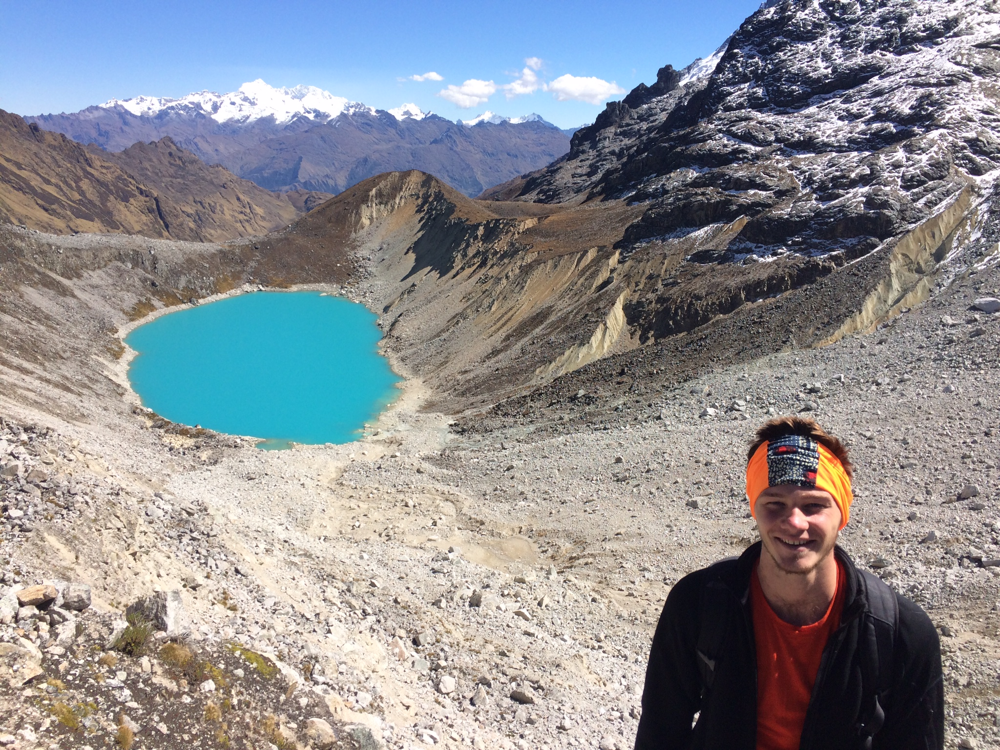
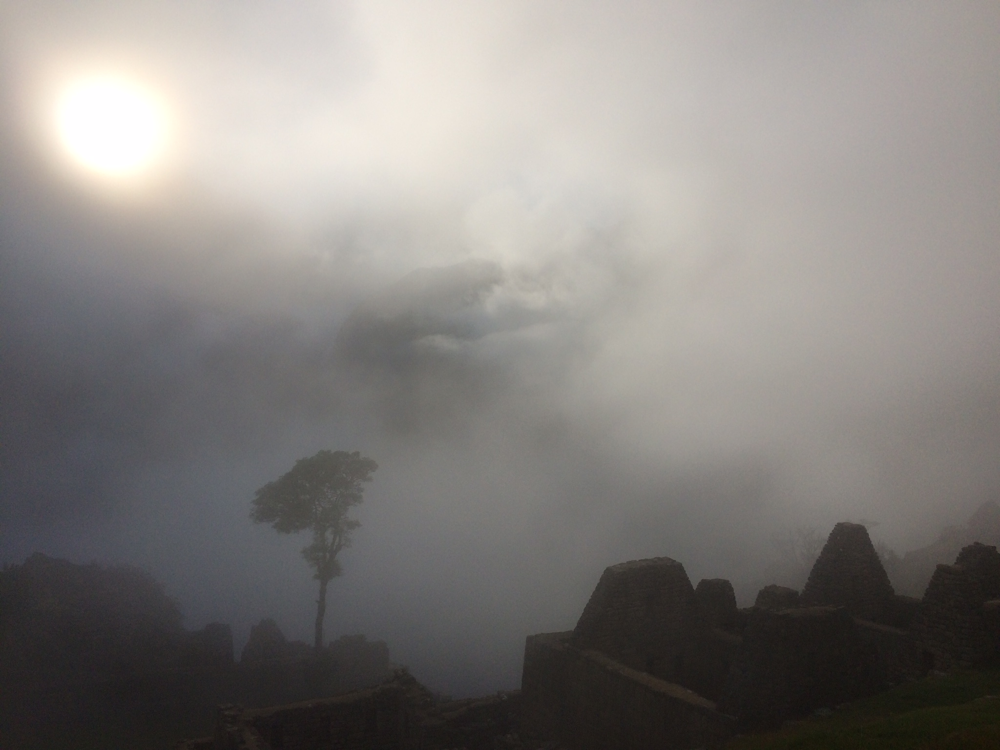
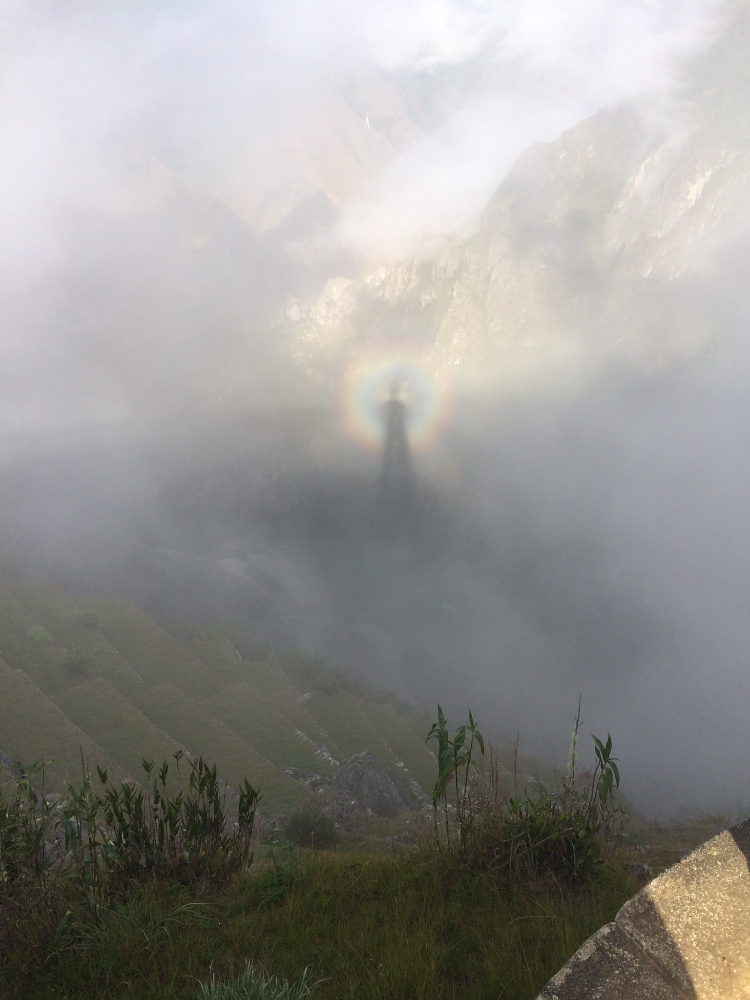
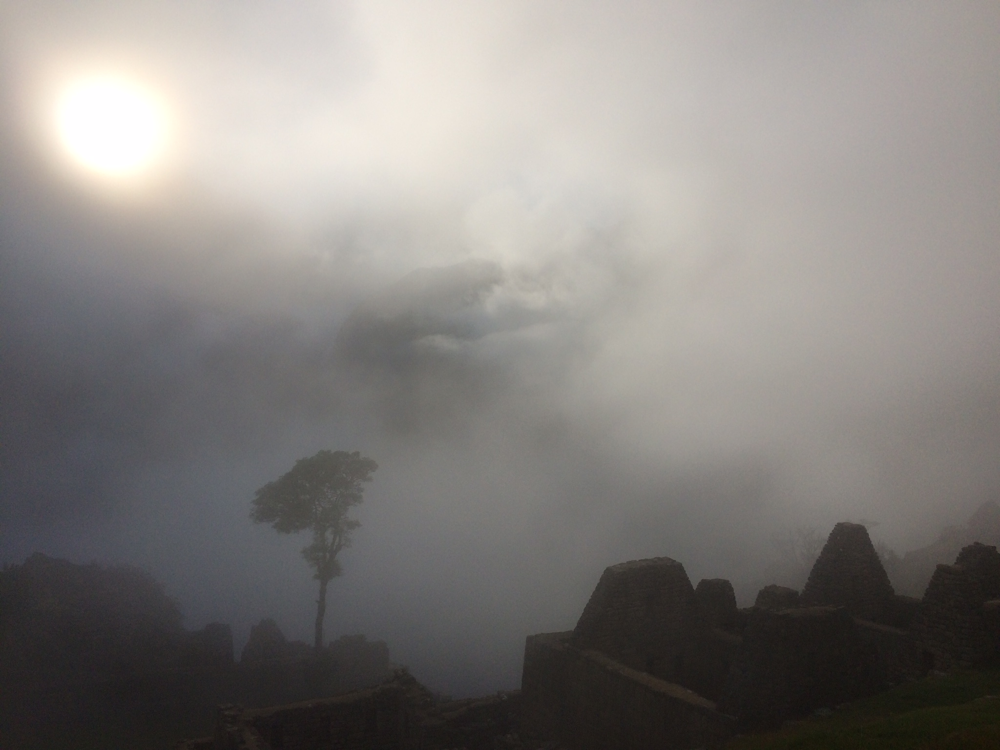
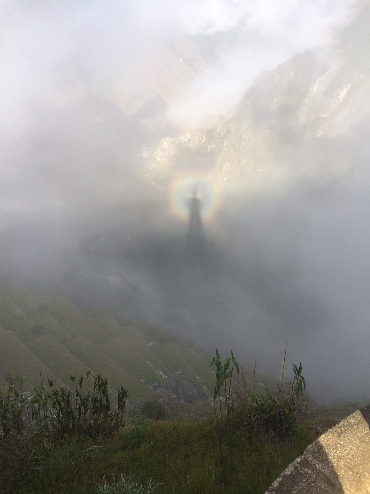
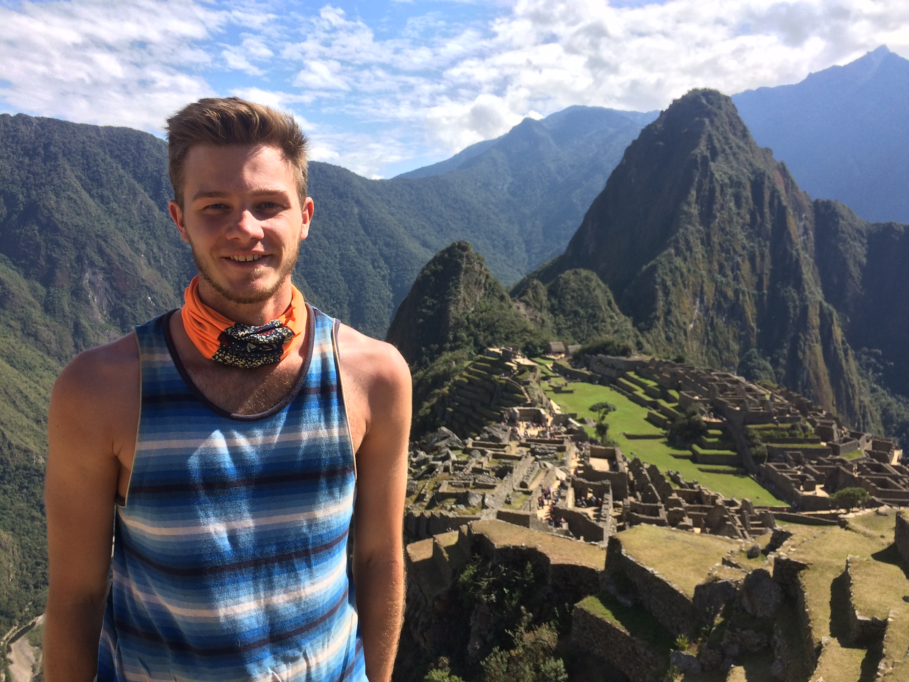
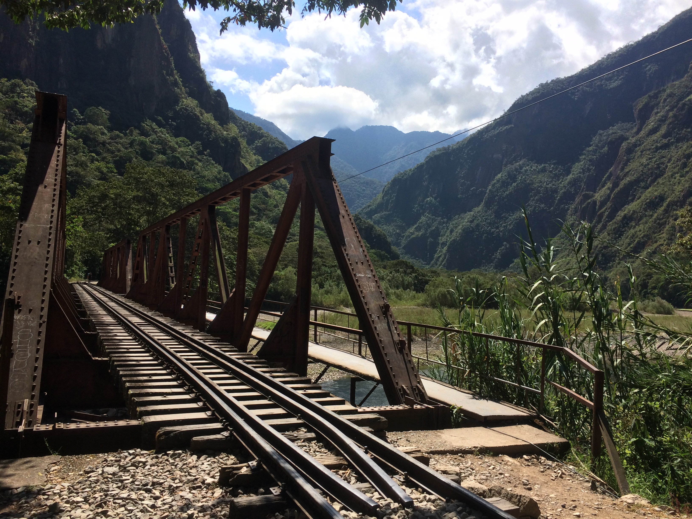

Machu Picchu Trek
July 24th, 2015
By now I had finished up all my classes and work at WaaW, and was starting my few short weeks of travel. The night before I was heading out for my Machu Picchu Trek, it was the "cumplemes" of my host mother's neice (she was one month old). My host mom, Maribel made this remarkable cake for the occasion.

The next morning I had to meet at the main city square at 4:45AM, and in classic Peruvian style the pickup was easily 20 minutes late. We drove out to the start point, got our day packs sorted, and we on our way after a quick breakfast. Day one was tiring, but probably because we had to start so early in the morning. Halfway through the day we began on a straight 8km path to the first campsite (left picture). Near the campsite there was a glacier, but I didn't realize that it was about a 45 minute walk up a steep hill to get there. By the time we went to the glacier and came down, then I was beat.


Day two was an early start again. Wake up call was around 5:30 (still dark out), but the guide came by our tents with a hot cup of coca tea so it really wasn't a bad wake up at all. Day two was by far the hardest day. Starting at roughly 3900m, going up to 4600m, and down to 2800m over a 22km hike definitely took a lot of the energy out of everyone. Everyone in our group had varying levels of fitness, which meant there was a lot of waiting for the group to catch up so the whole day took quite a while. When we got to the peak, we knew it was all downhill from there (literally). On the left is myself with Ricard, Bruno, Richard, and Marc. We found out there was a second glacier off the beaten path, but it was only about a ten minute walk so a few of us headed over there, and the teal colour of the water was incredible!


After walking downhill for quite a while with Bruno and Richard (two English guys), we saw the Spaniards in their underwear getting in a river. At 4400m we ended up going for a dip in absolutely freezing cold water. We finished up and headed down for lunch and the view was astounding. The picture below on the right was taken from our lunch table.

Day two was another night spent at a camp, but at this point the big bulk of the hiking was done. Day three was a flat easy walk down to a point where we got picked up and drove to a small town with a hot spring, and zip-lining. We passed a bunch of small waterfalls and cliff-sides on our downhill walk to the pick-up station. On the night of day three there was a bit of a party at the campsite, as it was our group and several others. They had "Inca Tequila" on sale for 1 sol per shot (40 cents Canadian), along with other drinks. Nothing too crazy went on though, we had booked zip-lining for the next morning.
After zip-lining we took a bus to Hidroelectrica where we got lunch, then took a 10km flat walk to Aguas Calientes, the town you stay in before visiting Machu Picchu. Nothing too special there, really touristy. We grabbed a group dinner then went to bed, because we were meeting at the gates around 5am to go to Machu Picchu for sunrise. We were so disappointed when we got to the top because it was super foggy, but it ended up making it way more memorable. As the sun rose it burned off the clouds, slowly bringing the entire mountain into view. The picture of the little wooden bridge is actually an old Inca Trail, they used to walk across that all the time. Makes my stomach sick just thinking about it. The tressel was on part of the 10km walk from Aguas Calientes, and the valley was looking down from the top of Machu Picchu. The third picture though, is my favourite. I still don't understand how it happened, but that is my shadow in that little circle. Pretty neat.
 



 